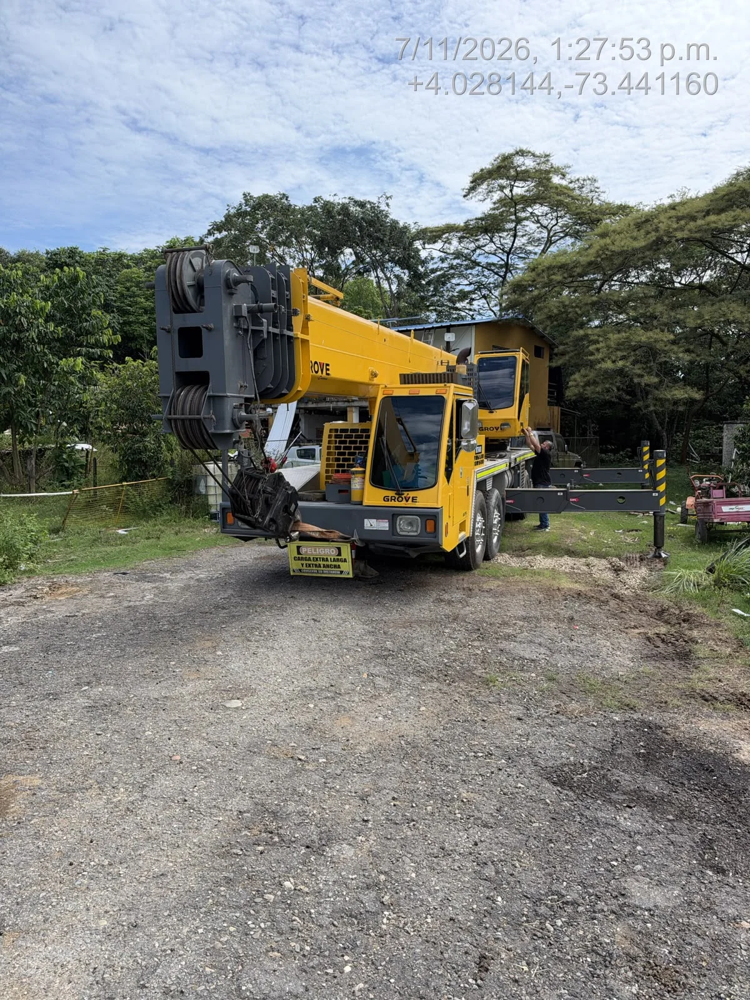

Avalúo de Maquinaria Amarilla, Agrícola e Industrial en el Meta
Dictámenes periciales certificados para empresas contratistas, agroindustrias y entidades financieras en Villavicencio, Puerto López, Casanare y los Llanos Orientales. Inspección técnica de horómetro, desgaste mecánico y valor comercial real bajo normas NIIF / NIC 16.
En maquinaria los honorarios se cotizan según el número de unidades, tipo de equipo y ubicación física. Valores base en Villavicencio; fuera se cotiza desplazamiento.

Inspección técnica de horómetros, chasis, componentes hidráulicos y desgaste operativo
Maquinaria y Equipos que Tasamos en los Llanos Orientales
Peritajes integrales con verificación de seriales, estado operativo real, historial de horas de uso y documentación aduanera o de propiedad.
Maquinaria Amarilla
Retroexcavadoras, motoniveladoras, rodillos compactadores, cargadores frontales y minicargadores para obras civiles y contratos viales.
Maquinaria Agrícola
Tractores de rueda y oruga, combinadas de arroz, cosechadoras de palma, sembradoras, rastras y equipos de adecuación de tierras.
Plantas Industriales & Silos
Molinos de arroz, plantas de secamiento, extractoras de aceite de palma, calderas, plantas eléctricas de respaldo y silos de almacenamiento.
Flotas de Carga & Transporte
Tractomulas, volquetas dobletroque, remolques tipo plancha, tanques para transporte de crudo o palma y montacargas industriales.
Flota de Tractores y Cosechadoras para Garantía Crediticia Finagro
Una empresa agroindustrial de la altillanura requería constituir garantía mobiliaria sobre 4 tractores John Deere de alta potencia y 2 combinadas arroceras para una línea de crédito de fomento con Banco Agrario / Finagro. Mediante inspección pericial en finca, verificación de horómetros reales y aplicación del modelo Ross-Heidecke, determinamos el valor razonable admitido por el comité de riesgos en 4 días hábiles sin observaciones.
Auditoría Electromecánica en Sitio
- Verificación de número de serie, motor y chasis vs. manifiesto DIAN.
- Comprobación del horómetro y registro de horas reales de operación.
- Estado del tren de rodaje, llantas/orugas y sistema hidráulico.
- Disponibilidad comercial de repuestos y soporte de marca en Colombia.
Dudas Comunes sobre Avalúos de Maquinaria y Equipo
¿Qué documentos se deben aportar para iniciar el avalúo de maquinaria?
Se requiere: 1) Factura de compra original o declaración de importación (Manifiesto de Aduana DIAN), 2) Tarjeta de registro de maquinaria agrícola o de construcción ante el RUNT si aplica, 3) Historial de mantenimientos mayores y bitácora de horómetros, y 4) Ubicación física del predio o campamento para coordinar la inspección técnica.
¿El avalúo es admitido por bancos comerciales y comités de crédito Finagro?
Totalmente. Nuestros dictámenes periciales son suscritos por avaluadores profesionales con inscripción vigente en el Registro Abierto de Avaluadores (RAA) en la especialidad de Maquinaria Fija, Equipos y Maquinaria Móvil, dando pleno cumplimiento a las directrices de la Superintendencia Financiera, Banco Agrario, Bancolombia, Davivienda y Finagro.
¿Cómo se calcula el valor comercial de una máquina usada con muchas horas de uso?
No se aplica una fórmula contable genérica. Determinamos el Costo de Reposición a Nuevo (cuánto cuesta la máquina idéntica o equivalente hoy en concesionario) y aplicamos el modelo de depreciación técnica Ross-Heidecke ajustado por: horómetro acumulado frente a la vida útil estándar, estado de desgaste en tren de rodaje o componentes críticos y calidad del mantenimiento recibido.
¿Cuánto tiempo toma la visita técnica y la entrega del informe final?
La inspección física en campamento, finca o taller se agenda entre 24 y 48 horas. El dictamen pericial foliado con fichas técnicas, memoria de depreciación y soporte fotográfico detallado se entrega en un plazo de 3 a 5 días hábiles en Villavicencio.
Servicios periciales complementarios
Avalúo de Fincas y Predios
Tasación de predios rurales, cultivos e inventario de mejoras agropecuarias en todo el Meta.
Peritaje Judicial Art. 226 CGP
Dictámenes periciales para juzgados en procesos ejecutivos, embargos y remates de maquinaria.
Tarifas Oficiales Reguladas
Consulta la tabla maestra de honorarios y plazos para todos los servicios periciales de la Lonja.
Tasa tu maquinaria y equipos con rigor técnico oficial
Agenda la inspección en campo en 24 a 48 horas y recibe tu expediente foliado con firma pericial RAA, admitido por bancos y firmas auditoras.